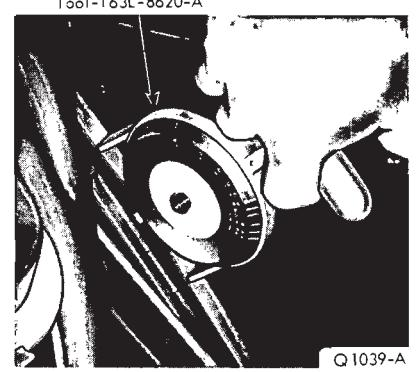
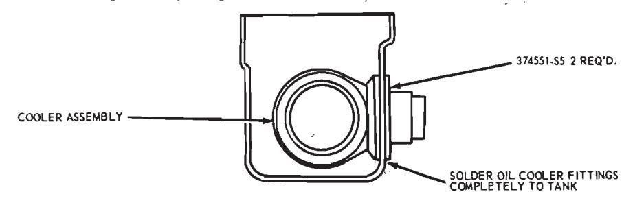
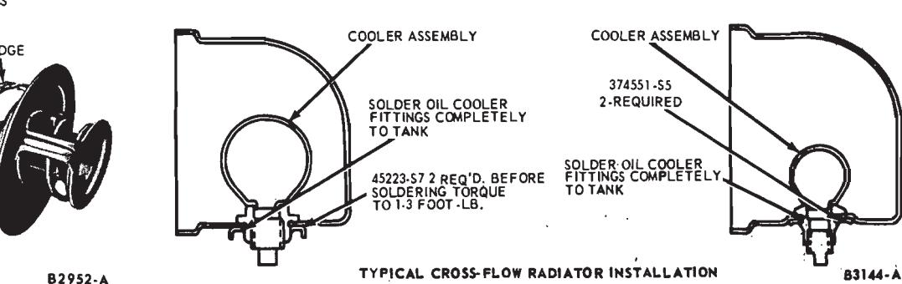
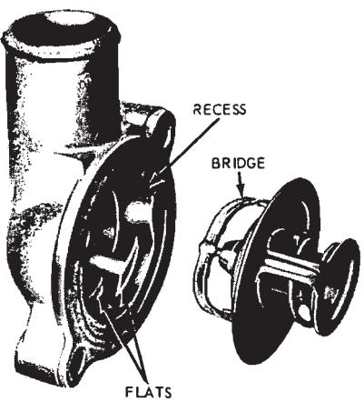

General Cooling System Service · 24-01-03a
Drive Belts
The fan drive belt(s) should be properly adjusted at all times. Loose drive belt(s) cause improper alternator, fan and water pump operation. A belt that is too tight places a severe strain on the water pump and the alternator bearings.
Properly tensioned drive belts minimize the noise and also prolong service life of the belt. Therefore, it is recommended that a belt tension gauge be used to check and adjust the belt tension. Any belt that has operated for a minimum of 10 minutes is considered a used belt, and, when adjusted, it must be adjusted to the reset tension shown in the specification.
Belt Tension
- Install the belt tension tool on the drive belt (Fig. 1) and check the tension following the instructions of the tool manufacturer.
- If adjustment is necessary, loosen the alternator mounting and adjusting arm bolts. Move the alternator toward or away from the engine until the correct tension is obtained. Remove the gauge. Tighten the alternator adjusting arm and mounting bolts. Install the tension gauge and check the belt tension.
Repairs
6-Cylinder Engine Cooling Fan
Removal
Loosen the fan belt. Remove the

Fig. 1 — Checking Drive Belt Tensioncapscrews and lock washers retaining the fan to the water pump hub. Remove the fan.
Installation
Position the fan on the water pump hub. Install the lock washers and capscrews and torque the capscrews to specifications. Adjust the fan belt tension to specifications.
V-8 Engine Cooling Fan
On a car with an air conditioner or extra-cooling radiator, a fan drive clutch may be used (see Specifications). Cars without air conditioning or equipped with Flex-Blade Fan utilize a pulley-to-fan spacer.
Removal
- Remove the radiator upper support and fan guard. Loosen the fan belt. Remove the capscrews and lock washers retaining the fan and spacer (or drive clutch) to the water pump hub. Remove the fan and spacer (or drive clutch).
- If equipped with a fan drive clutch, remove the retaining capscrews and lock washers and separate the fan from the drive coupling.
Installation
- Position the replacement fan on the drive clutch and install the lock washers and capscrews. Torque the capscrews evenly and alternately to specifications.
- Position the fan and spacer (or drive clutch) on the water pump hub and install the lock washers and capscrews. Torque the capscrews evenly and alternately to specifications. Adjust the fan belt tension to specifications. Then, check the fan drive clutch flange-to-water pump hub for proper mating. Install the radiator upper support and fan guard.
Fan Drive Belt
Removal
If equipped with power steering, air conditioning and/or Thermactor exhaust emission control system it will be necessary to loosen and remove the drive belts before the fan drive belt can be removed.
-
On a car with power steering (excepting Lincoln Continental), loosen the power steering pump at the mounting bracket and remove the drive belt.
On a car with an air conditioner, remove the compressor drive belt.
-
Loosen the alternator mounting and ajusting arm bolts. Move the alternator toward the engine. Remove the belt(s) from the alternator and crankshaft pulleys, and lift them over the fan.
Installation
- Place the belt(s) over the fan. Insert the belt(s) in the water pump pulley, crankshaft pulley and alternator pulley grooves. Adjust the belt tension to specifications.
- On a car with an air conditioner, install and adjust the compressor drive belt to specifications.
- On a car with power steering (excepting Lincoln Continental), install the power steering pump drive belt and tighten the pump at the mounting bracket. Adjust the drive belt tension to specifications.
Radiator Hose
Removal
Radiator hoses should be replaced as directed in the pertinent car Maintenance Schedule or whenever they become cracked, rotted or have a tendency to collapse.
Drain the radiator; then loosen the clamps at each end of the hose to be removed. Slide the hose off the radiator connection and the radiator supply tank connection (upper hose) or the water pump connection (lower hose).
Installation
Position the clamps at least 1/8 inch from each end of the hose. Coat the connection areas with an approved water-resistant sealer and slide the hose on the connections. Make sure the clamps are beyond the bead and placed in the center of the clamping surface of the connections. Tighten the clamps. Fill the radiator with the recommended permanent antifreeze and water mixture. Operate the engine for several minutes, then check the hoses and connections for leaks.
Thermostat
Removal
- Drain the radiator so that the coolant level is below the thermostat.
- Remove the coolant outlet housing retaining bolts. Pull the elbow away from the cylinder head or manifold sufficiently to provide access to the thermostat. Remove the thermostat and gasket.
Installation
Check the thermostat before initalling it, following the procedure under Thermostat Test, Part 24-01, Section 1.
- Clean the coolant outlet housing and cylinder head or manifold gasket surfaces. Coat a new gasket with water resistant sealer. Position the gasket on the cylinder head opening. The gasket must be positioned on the cylinder head or the intake manifold, before the thermostat is installed. To prevent incorrect installation of the thermostat, the water outlet casting on all engines contains a locking recess into which the thermostat is turned and locked. Install the thermostat with the bridge section (Fig. 2) in the outlet casting. Turn the thermostat clockwise to lock it in position on the flats cast into the outlet elbow.
- Position the coolant outlet elbow against the cylinder head, or the intake manifold. Install and torque the retaining bolts to specifications.
- Fill the cooling system with the recommended Permanent Anti-Freeze and water mixture. If equipped with a crossflow radiator, follow the special instructions in Part 24-02 regarding checking coolant level. Check for leaks and proper coolant level after the engine has reached normal operating temperatures.
Automatic Transmission Oil Cooler
Replacement of the automatic transmission oil cooler in the radiator tank, as given below, is usually performed by radiator specialty shops on a sub-let basis. However, the operation can be performed in a dealer service department, providing proper equipment is available.
Removal
- Drain the cooling system.
- Remove the radiator from the vehicle, following the procedure given in Part 24-02.
- Thoroughly clean the radiator assembly internally and externally by submerging in a tank filled with a caustic solution. Then, using clean water, flush until the caustic solution is removed from all internal and external surfaces.
NOTE
Caution should be exercised during the disassembly and assembly solder operation of radiator components. Avoid excess heat concentration which could result in burning through the radiator sheet metal or loosening an adjoining soldered area.
- Loosen the supports connecting the affected tank to the core, if so equipped.
- Remove the radiator tank containing the defective oil cooler.
- Remove the puddled solder from the oil cooler inlet and outlet connections along with the internal tooth lockwashers retaining the connections to the tank.
- Remove the defective oil cooler.
- Clean the soldered surface areas and inspect and tin as necessary to assure proper solder bonding.
Installation
-
Install the replacement oil cooler assembly into the tank openings provided.
-
Make a new mechanical connection by installing new internal tooth lockwashers on the external inlet and outlet connections of the cooler (Fig. 3).
-
Seat the tank assembly in the seam well and solder securely, completely filling the seam well. Use 40-60 solder with either zinc chloride 30 (BAUME) or 5-B NALCO flux.
-
Resolder the supports in posi-
-
Puddle-solder the oil cooler fittings completely to the tank.
-
Flush off all excess acid, internally and externally.
-
Pressure-test the radiator assem-

Typical Down Flow Radiator Installation bly to 14-16 psi for leaks.
Fig. 3 — Installing Oil Cooler
Fig. 2 — Installing Thermostat — Typical -
Paint as required.
-
Install the radiator in the vehicle. Install the straight hose nipple fittings or flare connectors in the oil cooler inlet and outlet connections and connect the transmission oil cooler lines.
-
Connect the radiator inlet and outlet connections.
-
Assemble the fan shroud to the radiator if so equipped.
-
Flush the cooling system and refill with the recommended mixture of Rotunda all season coolant.
NOTE
Only manufactured or natural gas torches should be used to perform radiator repairs. Do not use acetylene.
3 Cleaning and Inspection
Cleaning Cooling System
To remove rust, sludge and other foreign material from the cooling system, use Rotunda Cooling System Cleanser. Removal of such material restores cooling efficiency and avoids overheating.
Always remove the thermostat prior to pressure flushing.
A pulsating or reversed direction of flushing water flow will loosen sediment more quickly than a steady flow in the normal direction of coolant flow. In severe cases where cleaning solvents will not properly clean the cooling system for efficient operation, it will be necessary to use the pressure flushing method.
Various types of flushing equipment are available.